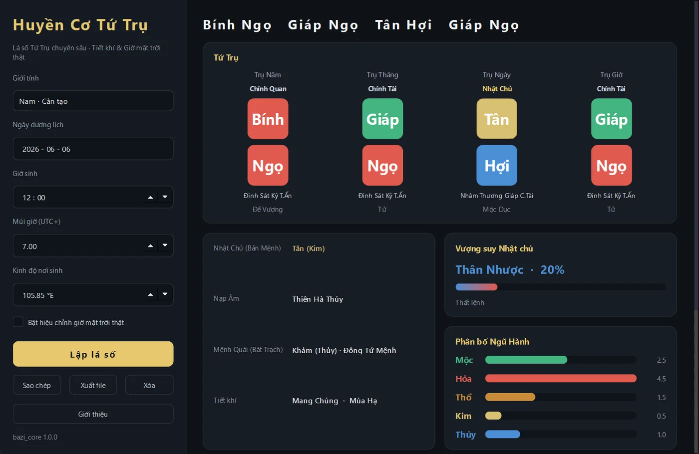

AuraLink Studio / Huyền Cơ Tứ Trụ
Bản chính thức v1.0.0 · WindowsNhập ngày giờ sinh, bấm một nút, có ngay lá số đầy đủ để luận: bốn trụ, tàng can, thập thần, vượng suy nhật chủ, phân bố ngũ hành, dụng thần. Điểm khác biệt nằm ở những ca mà phần mềm khác hay tính lệch — sinh sau 23 giờ, hoặc sinh đúng hôm giao tiết.

Phần mềm lập lá số phần lớn giống nhau ở ca thường, chỉ khác nhau đúng vài trường hợp. Đây là những trường hợp đó.
Can chi của năm, tháng, ngày, giờ — tô màu theo ngũ hành, nhật chủ được đánh dấu riêng để nhìn ra ngay.
Mỗi địa chi mở ra tàng can kèm thập thần tương ứng, đặt ngay dưới trụ để đọc liền mạch.
Thân vượng hay thân nhược, kèm phần trăm và lý do — đắc lệnh, thất lệnh, có thông căn hay không.
Mộc, hỏa, thổ, kim, thủy hiển thị theo điểm có trọng số — không phải đếm suông số chữ trong lá số.
Nạp âm của lá số, vòng trường sinh từng trụ, và mệnh quái Đông / Tây tứ mệnh theo bát trạch.
Chép nguyên lá số ra văn bản hoặc xuất thành file để lưu, in và gửi cho người khác xem.
Tải bộ cài, chạy, rồi lấy key kích hoạt miễn phí qua Telegram — chừng một phút là xong. Kích hoạt rồi thì dùng được cả khi máy không nối mạng.